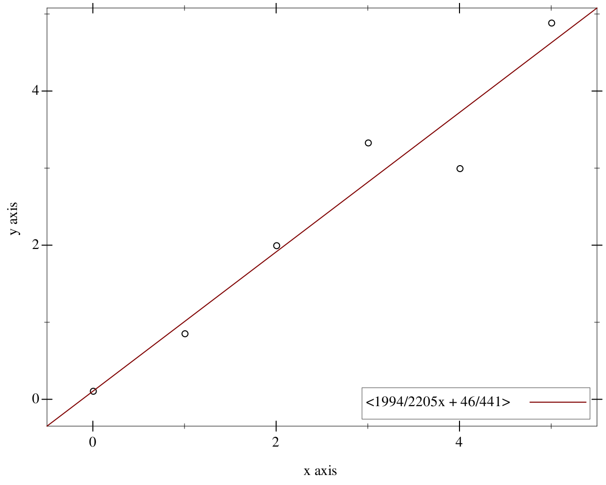
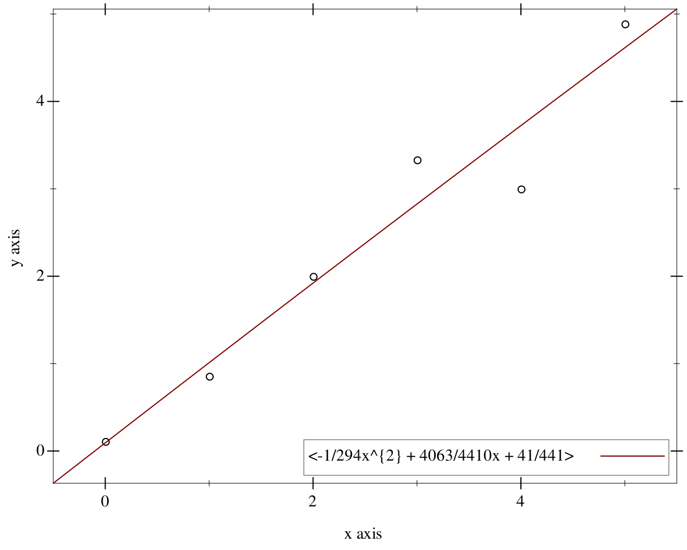
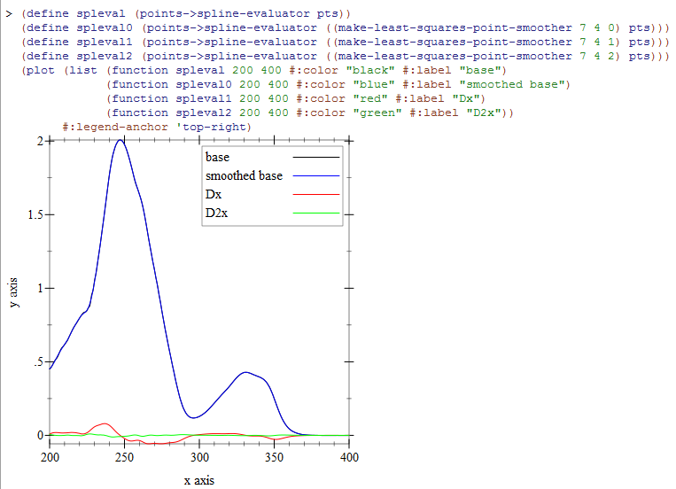
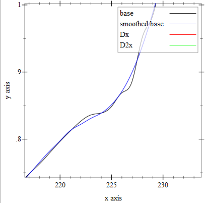

Simple Polynomials of One Variable
1 A Simple Polynomial Library
| (require simple-polynomial) | package: simple-polynomial |
2 Polynomial Creation, Extraction, and Checking
| (require simple-polynomial/base) | |
| package: simple-polynomial | |
procedure
(coefficient? maybe-n) → boolean?
maybe-n : any/c
struct
(struct polynomial (terms))
terms : (listof coefficient?)
procedure
(poly coefficient ...) → polynomial?
coefficient : coefficient?
(polynomial '(2 1))
procedure
p1 : polynomial? p2 : polynomial?
2.1 Display of Polynomials
"<2x^{2} + 3>"
parameter
(display-short?) → boolean?
(display-short? boolean?) → void? boolean? : boolean?
= #f
> (define P (poly 1 2 3 4 5 6 7)) > P <x^{6} + 2x^{5} + 3x^{4} + 4x^{3} + 5x^{2} + 6x + 7>
> (display-short? #t) > P <x^{6} + 2x^{5} + ... + 6x + 7>
procedure
(poly->string p) → string?
p : polynomial?
procedure
(string->poly s) → polynomial?
s : string?
> (define P (poly 1 2 3 4 5 6 7)) > (display-short? #t) > P <x^{6} + 2x^{5} + ... + 6x + 7>
> (poly->string P) "<x^{6} + 2x^{5} + 3x^{4} + 4x^{3} + 5x^{2} + 6x + 7>"
> (string->poly "x+1") <x + 1>
> (string->poly "x - 2x^{2} + 1 + x + 1") <-2x^{2} + 2x + 2>
procedure
(poly->latex p [#:inexact-digits id]) → string?
p : polynomial? id : number? = 4
> (define P (poly 1/2 1 1.5 1.334567)) > (poly->latex P) "\\frac{1}{2}x^{3}+x^{2}+1.5000E0x+1.3346E0"
> (poly->latex P #:inexact-digits 2) "\\frac{1}{2}x^{3}+x^{2}+1.50E0x+1.33E0"
2.2 Arithmetic
procedure
(poly+ p ...) → polynomial?
p : (or/c coefficient? polynomial?)
procedure
(poly- p ...) → polynomial?
p : (or/c coefficient? polynomial?)
procedure
(poly* p ...) → polynomial?
p : (or/c coefficient? polynomial?)
(poly- p1 p2 p3)
procedure
(poly-expt base exponent) → polynomial?
base : polynomial? exponent : nonnegative-integer?
procedure
(poly-quotient/remainder num den) →
polynomial? polynomial? num : polynomial? den : polynomial?
procedure
(poly-gcd left right) → polynomial?
left : polynomial? right : polynomial?
3 Additional Tools
| (require simple-polynomial/tools) | |
| package: simple-polynomial | |
procedure
(points->polynomial pts) → polynomial?
pts : (listof (listof number?))
If the desired starting point is not at 0 but at x=a, simply compose the resulting polynomial with (poly 1 (- a)).
procedure
(interpolate-at-integer-points y-values) → polynomial?
y-values : (listof number?)
procedure
(rational-roots p) → (listof number?)
p : polynomial?
procedure
(falling-factorial n) → polynomial?
n : nonnegative-integer?
procedure
(rising-factorial n) → polynomial?
n : nonnegative-integer?
4 Fitting Points
| (require simple-polynomial/fit) | |
| package: simple-polynomial | |
A cubic spline would join every pair of points with a cubic equation, and where the cubic equations join at an interior point they would agree on slope and curvature at that joining point. But this still leaves the entire spline underdetermined because the first and last points have no further joins. "Natural" cubic splines set this curvature to zero.
procedure
(points->spline pts) → (listof polynomial?)
pts :
(and/c (listof (listof coefficient?)) (>/c (length pts) 2))
procedure
(points->spline-evaluator pts) → procedure?
pts :
(and/c (listof (listof coefficient?)) (>/c (length pts) 2))
> (define pts '((1 1) (2 3) (3 -1) (4 1/2))) > (define peval (points->spline-evaluator pts)) > (peval 1/2) -59/80
> (peval 0.5) -0.7374999999999999
> (peval 3) -1
procedure
(points->best-fit-polynomial pts deg) → polynomial?
pts : (listof (listof coefficient?)) deg : positive-integer?
> (define pts (for/list ((x (in-range 6)) (noise '(1/9 -1/7 0 1/3 -1 -1/9))) (list x (+ x noise)))) > (define P (points->best-fit-polynomial pts 1))
> (plot (list (points pts) (function P -0.5 5.5 #:label (poly->string P))) #:width 600 #:height 480 #:legend-anchor 'bottom-right) 
> (define P2 (points->best-fit-polynomial pts 2))
> (plot (list (points pts) (function P2 -0.5 5.5 #:label (poly->string P2))) #:width 600 #:height 480 #:legend-anchor 'bottom-right) 
For the background of this, see the paper "General Least-Squares Smoothing and Differentiation by the Convolution (Savistzky-Golay) Method". Gorry, P. Anal. Chem. 1990, 62, 570-573.
procedure
(make-least-squares-point-smoother width order derivative-order) → procedure? width : number? order : number? derivative-order : number?
Here is an example image of some real-world data looked at raw, smoothed, and with smoothed first and second order derivatives.  The smoothing of the main interpolation is somewhat masked by the scale, so here is a closeup of the unsmoothed and smoothed interpolations. 